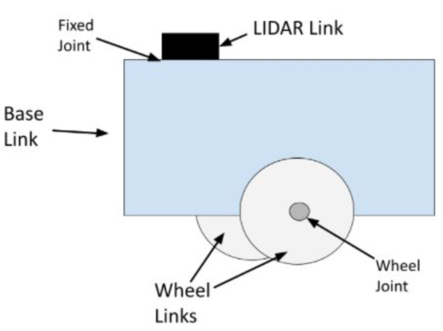

[Ref]
Unified Robot Description Format is an XML file that contains a complete physical description of a robot:
Geometry
Kinematics
Dynamics
Visual aspects
The body of a robot consists of two components
Links: The rigid pieces of a robot
Joints: The pieces of a robot that move, enabling motion between connected links

Links and joints of a mobile bot with lidar
Joints
A wheel joint is a revolute joint, connecting a wheel link to a base link. Fixed joints have no motion at all. It could be a simple screw that connects a LIDAR to a robot's base. Prismatic joints cause linear motion between links (as opposed to rotational motion with a revolute joint).